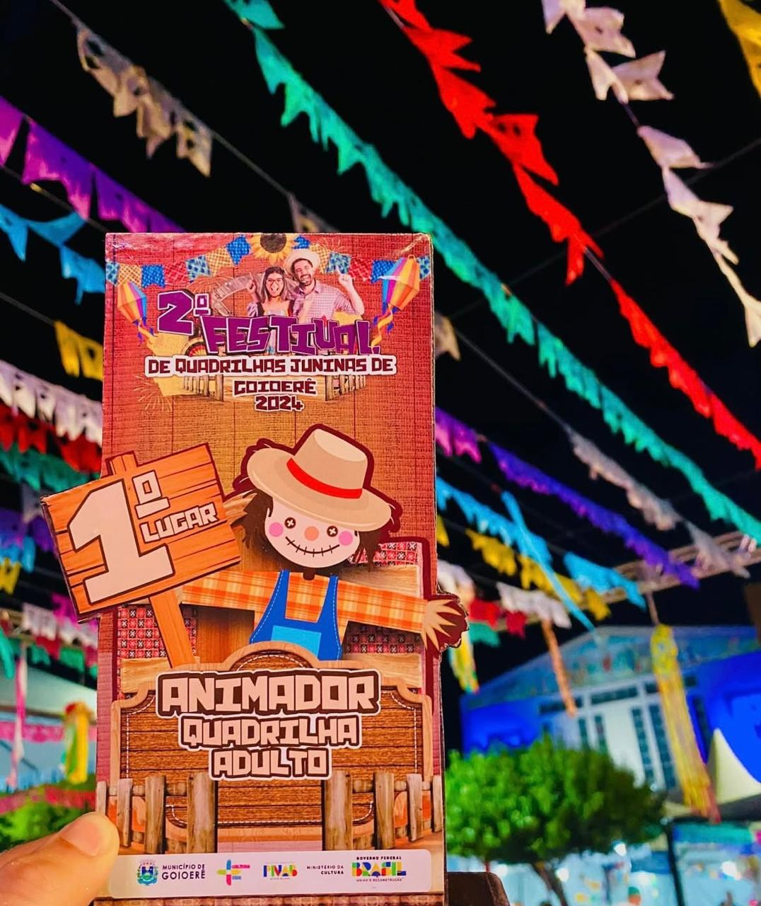

Quadrilha
ORIGEM- As raízes das quadrilhas juninas tem origem nas danças de salão europeias, que chegaram ao Brasil pela corte portuguesa no início do século XIX. Inicialmente, a festa junina era uma celebração em homenagem a São João Batista, mas ao longo do tempo, passou a incluir homenagens a outros santos populares como Santo Antônio e São Pedro. E essas festividades incluiram algumas danças típicas sendo a quadrilha uma delas, fogueiras, comidas tradicionais, jogos e muitas brincadeiras.